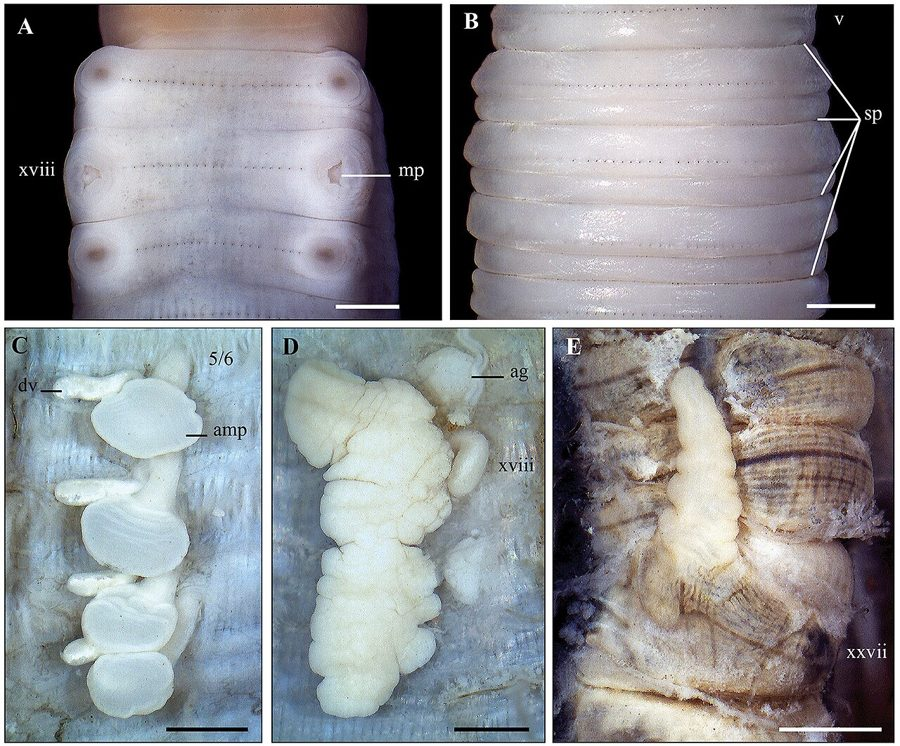

केंचुआIndian Common Earthworm
Metaphire posthuma · Megascolecidae · SFL-0002

- Scientific name
- Metaphire posthuma (Vaillant, 1868)
- Family
- Megascolecidae
- Hindi
- केंचुआ
- Status here
- native
- IUCN
- not evaluated
When to look कब देखें
Expected mainly in June, July, August, September, October, November.
Indian Common Earthworm
Metaphire posthuma (Vaillant, 1868) — Megascolecidae
केंचुआ — चार्ल्स डार्विन ने अपनी आखिरी किताब 1881 में केंचुए पर लिखी — उन्होंने कहा: "शायद ही कोई दूसरा जीव है जिसने दुनिया के इतिहास में इतनी बड़ी भूमिका निभाई हो।" पूर्वी यूपी के किसान इसे उस किताब से पहले से जानते हैं — अच्छी मिट्टी नरम होती है, नरम मिट्टी केंचुए वाली होती है।
Quick Identification त्वरित पहचान
| Feature | Description |
|---|---|
| Size | 10–25 cm long; 4–8 mm diameter; cylindrical, segmented |
| Colour | Reddish-brown to purplish-brown (dorsal); paler pinkish (ventral) |
| Segments | 100–130 ring-like annuli — each distinctly visible |
| Clitellum | Thickened, paler band around segments 14–16 — reproductive collar; absent in juveniles |
| Locomotion | Extends then contracts; leaves a slimy trail in moist conditions |
| Eyes/Legs | None — purely subterranean; light-sensitive through skin |
| When visible | After heavy rain — emerge onto surface; common on roads and paths in monsoon |
Field rule: Large (10–25 cm), reddish-brown, segmented worm + clitellum band near the front + found in agricultural soil or at surface after rain = Metaphire posthuma. The combination of size, colour, and clitellum position distinguishes it from all other soil worms.
Morphology आकारिकी
| Feature | Measurement |
|---|---|
| Body length | 10–25 cm (up to 30 cm in large individuals) |
| Body diameter | 4–8 mm |
| Segments | 100–130 |
| Clitellum position | Segments 14–16 |
Body wall: Outer cuticle (thin, moist, permeable — gas exchange occurs here); circular muscle layer; longitudinal muscle layer. The musculature creates the extending/contracting movement.
Segments: Each segment bears a pair of setae (bristle-like structures) on the ventral surface — used to grip soil during movement. These are invisible to the naked eye but are felt if you run a finger along the underside.
Internal anatomy: Digestive tube running from mouth to anus; calciferous glands (for regulating calcium); nephridia (excretory organs) in most segments; 5 pairs of "hearts" (aortic arches); no distinct respiratory organ — breathes through the moist skin.
Hermaphrodite: Each earthworm has both male and female reproductive organs. Cross-fertilization occurs during mating — two worms lie together, exchange sperm, then each forms a cocoon containing 2–6 fertilized eggs.
Ecological Role पारिस्थितिक भूमिका
The earthworm's core contribution — in three processes:
1. Soil aeration: Earthworms create networks of burrows — 100–1,000+ burrow openings per square metre in healthy soil. These burrows allow oxygen to reach plant roots, rain to penetrate rapidly, and CO₂ from root respiration to escape. Compacted, earthworm-poor soil becomes waterlogged and anaerobic.
2. Decomposition: Earthworms ingest dead organic matter (fallen leaves, crop residue, dead roots) along with soil. As material passes through the digestive tract, mechanical grinding breaks down plant material, gut bacteria further decompose organic matter, and nutrients (N, P, K) are released in plant-available forms.
3. Worm casts: Earthworm excreta are called casts. Worm casts contain 5–11× more nitrogen, 7× more phosphorus, and 3× more potassium than the surrounding soil. They are also pH-neutral and rich in beneficial microbes. Visible as small clay pellets around burrow openings.
Position in food web:
- Feeds on: dead organic matter, soil bacteria and fungi, decomposing plant material
- Predated by: Common Myna (pulls from wet soil), Indian Roller, snakes (some species), centipedes (Scolopendra morsitans, MYR-0001), mongoose (occasionally)
Life Cycle / Phenology जीवन चक्र
| Month | Event |
|---|---|
| May–Jun | Aestivation — retreat to deep soil (1–2 m); coil, reduce metabolism; sealed in mucus |
| Jun–Jul | Emergence with monsoon onset; begin feeding and mating |
| Jun–Nov | Active season — surface emergence after rain; mating during moist periods |
| Year-round | Cocoon formation; each worm forms 1–3 cocoons (lemon-shaped, 4–6 mm; 2–6 eggs) |
| 14–21 days | Incubation time per cocoon (temperature-dependent) |
| 2–3 months | Hatchlings grow to maturity; clitellum develops |
Lifespan: 4–8 years in undisturbed soil. Hermaphrodite — both partners form cocoons after mutual sperm exchange.
Vermicomposting केंचुआ खाद
What is vermicomposting? Deliberately cultivating earthworms in beds of organic matter to produce worm-cast-rich compost. The end product — vermicompost or केंचुआ खाद — is among the highest-quality soil amendments available.
Why it matters in eastern UP:
- Reduces dependence on expensive chemical fertilizers
- Uses agricultural waste (rice straw, crop residue, kitchen waste) that would otherwise be burned
- Produces compost in 45–60 days vs. 3–6 months for conventional composting
- Vermicompost significantly improves yield in millet, vegetable, and paddy crops
- Government of UP runs subsidized vermicompost unit programs (beds + worms + training)
How to start: A basic vermicompost bed requires: a shaded concrete bed or lined pit (2 m × 1 m × 0.5 m), moist bedding (cow dung + crop residue), 1–2 kg earthworms. Feed with vegetable scraps, crop residue — not citrus, onion, or meat. Harvest after 45 days.
Agricultural / Human Relevance कृषि एवं मानव उपयोग
Soil health indicator: Earthworm density is one of the most reliable indicators of soil health. Healthy farmland in eastern UP: 50–200 earthworms per square metre. Chemically degraded soil: fewer than 10 per square metre. Monoculture with heavy pesticide use = earthworm-poor soil = reduced agricultural productivity over time.
Pesticide threat: Earthworms are highly sensitive to many insecticides — particularly organophosphates and carbamates. A single application of endosulfan or chlorpyrifos can eliminate earthworm populations in treated fields. Recovery takes 3–5 years without re-inoculation.
Burning of crop residue: A common practice in eastern UP — burning rice/wheat stubble. This kills surface earthworms and destroys cocoons. Successive burning collapses earthworm populations over years.
Traditional knowledge: The sight of many earthworms in soil is understood by experienced farmers as a sign of good soil — "jahan kenchua wahan achhi mitti" (where there's earthworm, there's good soil). This traditional knowledge is ecologically accurate.
Expected Locally स्थानीय रूप से अपेक्षित
Not a field record. Written from published accounts for eastern Uttar Pradesh. No confirmed local sighting yet — if you have seen it, that is what the atlas needs.
अभी तक स्थानीय पुष्टि नहीं। यह विवरण प्रकाशित स्रोतों से है, किसी अवलोकन से नहीं।
Earthworms are ubiquitous across Basti district in agricultural soils during the active season. Large surface emergences occur after the first heavy monsoon rains in June–July — earthworms cover road surfaces in the early morning, particularly on brick or concrete paths through agricultural zones. Kitchen garden soils under mulch and compost heaps have the highest densities (250–400+ per m²). Paddy field bunds during August–September have moderate densities. Actively farmed paddy fields with recent pesticide application show near-zero counts in surface soil cores.
Distribution वितरण
Global range: Metaphire posthuma is distributed across the Indian subcontinent — India, Bangladesh, Nepal, Sri Lanka, and Myanmar. It is one of the most commonly encountered earthworms in agricultural and garden soils of South Asia.
In India: Distributed across the entire country in warm-season zones. Particularly abundant in the fertile alluvial soils of the Gangetic plain.
In Uttar Pradesh: Present across the entire state in agricultural soils, garden soils, and moist river-bank sediments. One of the dominant earthworm species of the Ganga-Ghaghara alluvial zone.
In Basti district / eastern UP: Year-round resident (aestivating in dry months). Active June–November in moist agricultural soils, garden beds, and paddy field bunds.
Research Questions शोध प्रश्न
- How many earthworms per square metre in untreated vs. pesticide-treated fields? — Dig a 30×30×20 cm pit in each field type; count all earthworms; repeat at 5 sites each.
- Does crop residue burning affect earthworm density? — Count earthworms in a field before burning, one week after, one month after.
- What is the earthworm density in a functioning vermicompost bed? — Count and weigh earthworms from a 10×10 cm section of an active vermicompost bed.
- When do earthworms first appear at the surface after monsoon rains? — Record date and rainfall amount each time worms appear on the surface; what rainfall threshold triggers emergence?
- Which birds pull earthworms most frequently in your area? — 15-minute timed observation in a wet field after rain; count by bird species.
Similar Species मिलती-जुलती प्रजातियाँ
| Species | How to distinguish |
|---|---|
| Red Wiggler (Eisenia fetida) | Smaller (6–12 cm); strongly banded alternating red and yellow segments; found only in compost heaps; pungent smell when disturbed |
| Giant Indian Earthworm (Amynthas alexandri) | Much larger (30–50 cm); found in wet, undisturbed soil; rarer |
| Small soil worms (Enchytraeidae) | Much smaller (1–3 cm); whitish; found in damp leaf litter |
Taxonomy & Classification वर्गीकรण
Original description. Metaphire posthuma was originally described as Perichaeta posthuma by Vaillant in 1868, and later transferred to the genus Metaphire Sims & Easton, 1972. The genus Metaphire contains approximately 250 species across Southeast and South Asia, making it the largest genus in the family Megascolecidae. The species name posthuma refers to its original collection context.
Subspecies. No subspecies are formally recognised; Metaphire posthuma is treated as monotypic.
Family and order placement. Belongs to the order Haplotaxida, family Megascolecidae. Megascolecidae is one of the largest earthworm families, with approximately 1,400 species distributed across Asia, Australia, and the Pacific. The family is defined by the presence of multiple testes segments and complex reproductive organs. The order Haplotaxida includes all "true" earthworms (mega- and megadrile worms) and the leeches.
Phylogenetic notes. Earthworms (class Clitellata) are coelomate annelid worms — their segmented body plan is homologous to polychaete marine worms. The evolution of terrestriality in earthworms required major adaptations in water retention, gas exchange through moist skin, and burrowing locomotion. The hermaphroditism of earthworms is ancestral in the class Clitellata. The "five hearts" of earthworms are not true hearts but aortic arches — muscular blood vessel loops that actively pump coelomic fluid.
IUCN status rationale. Metaphire posthuma has not been assessed by the IUCN Red List. As a widespread species in South Asian agricultural soils, it is not of conservation concern globally. However, local populations are severely threatened by heavy pesticide use, crop residue burning, and monoculture farming — threats that are rapidly increasing in eastern UP.
Photo Gallery फोटो गैलरी
Atlas Connections संबंधित प्रजातियाँ
- SFL-0001 Mound-building Termite — shares soil habitat; both are major decomposers; termite excavates, earthworm aerates
- MYR-0001 Indian Centipede — predator of earthworms in moist soil
- BRD-0006 Common Myna — pulls earthworms from wet soil after rain; one of the earthworm's most visible predators
- FLR-0014 Paddy — earthworm density in paddy field bunds directly affects soil fertility and drainage
- BRD-0003 Indian Roller — hunts earthworms at field edges post-rain
References संदर्भ
- Darwin, C. (1881). The Formation of Vegetable Mould, through the Action of Worms, with Observations on their Habits. John Murray, London.
- Julka, J.M. (1988). The Fauna of India and Adjacent Countries: Megadrile Oligochaeta (Earthworms). Zoological Survey of India, Calcutta.
- Sims, R.W. & Easton, E.G. (1972). A numerical revision of the earthworm genus Pheretima. Biological Journal of the Linnean Society, 4: 169–268.
- Kale, R.D. (1998). Earthworm: Cinderella of Organic Farming. Prism Books Pvt. Ltd., Bangalore.
- Zoological Survey of India. Fauna of Uttar Pradesh — Oligochaeta. ZSI, Kolkata.
- GBIF Occurrence Data — Metaphire posthuma, India (2026). GBIF taxon key: 5927551.
Source file: species/fauna/soil_fauna/earthworm.md